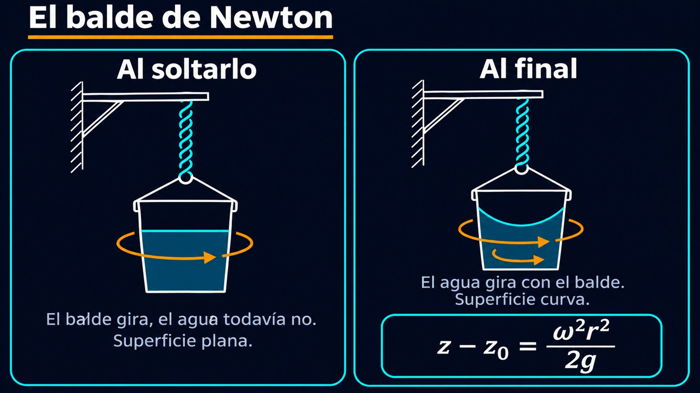

Un balde, una soga retorcida y una pregunta sobre el espacio: la superficie del agua que gira
Revolvé con fuerza el té en una taza y mirá la superficie: se hunde en el centro y sube por los bordes. Hacé girar un balde con agua y pasa lo mismo, pero más prolijo: la superficie toma una forma curva muy precisa. Ese fenómeno simple sirvió para dos cosas muy distintas. Para la mecánica de fluidos, es el ejemplo más claro de un líquido en equilibrio dentro de un recipiente que se mueve. Para Isaac Newton, fue un argumento sobre la naturaleza del espacio.
La hidrostática dice que, en un fluido en reposo, la superficie libre es perpendicular a la gravedad: por eso el agua de un vaso queda horizontal. Si el recipiente se acelera, el líquido puede quedar en reposo respecto del recipiente, y entonces vale la misma idea con una gravedad «efectiva», que suma la gravedad real y el efecto de la aceleración.
El caso más simple es un tanque que acelera en línea recta, como un camión cisterna que arranca. El libro de Genick Bar-Meir muestra que la gravedad efectiva queda inclinada, y la superficie del líquido se inclina con ella, un ángulo β tal que [1]:
Con una aceleración de 5 m/s², que es la que el propio Bar-Meir propone como ejercicio, la superficie se inclina unos 27 grados (un cálculo propio). Por eso el café se derrama cuando frenás de golpe con la taza en la mano.
Si el recipiente gira con velocidad angular ω alrededor de un eje vertical y el líquido termina girando con él, cada porción de líquido necesita una fuerza hacia el centro para seguir su círculo. Visto desde el balde, eso equivale a una gravedad efectiva que tiene una parte hacia abajo, g, y otra hacia afuera, ω²r, que crece con la distancia r al eje [2]. Como la parte hacia afuera crece con r, la superficie se inclina cada vez más hacia los bordes, y las líneas de presión constante dejan de ser rectas para volverse parábolas [2]:
Girada alrededor del eje, esa parábola es un paraboloide. La altura que sube el agua crece con el cuadrado de la velocidad de giro: si el balde gira el doble de rápido, el agua sube cuatro veces más en los bordes. Bar-Meir aplica la misma fórmula a un tubo en U que gira, en el que los dos brazos quedan a distinta altura según su distancia al eje [2].

La calesita: en una calesita, cuanto más lejos del centro estás, más fuerte te tira hacia afuera. Si pudieras inclinarte para no caerte, te inclinarías más en el borde que cerca del eje. El agua del balde hace exactamente eso: cada parte de la superficie se inclina lo justo para quedar perpendicular a su gravedad efectiva, y el resultado es una curva que se empina hacia los bordes.
Newton describe el experimento en el escolio de los Principia (1687), e insinúa que lo hizo de verdad [3]. Según la Stanford Encyclopedia of Philosophy, el montaje era así: se cuelga un balde de una soga larga, se gira muchas veces hasta retorcerla bien y se llena de agua. La altura que sube el agua por las paredes sirve como medida de su tendencia a alejarse del centro [3].
El experimento tiene dos etapas [3]:
Newton concluyó que la curvatura del agua no depende de su rotación respecto del recipiente que la rodea: la verdadera rotación no se puede definir como rotación relativa a los cuerpos de alrededor [3]. Para él, era un argumento a favor de un movimiento absoluto. La idea recibió muchas críticas, de Leibniz y Berkeley en adelante, y sobre todo de Ernst Mach, cuyos escritos influyeron en Einstein [3].
Física y filosofía en un balde: la fórmula del paraboloide no depende de cómo se interprete el experimento: es la misma para cualquier líquido que gire como un cuerpo rígido. Lo que se discute desde Newton es respecto de qué gira el agua cuando decimos que gira. La mecánica de fluidos usa la respuesta práctica: respecto de un sistema de referencia inercial, como el laboratorio.
Un balde que gira es un problema de hidrostática con una gravedad que cambia de punto a punto. La superficie se vuelve un paraboloide cuya altura crece con el cuadrado de la velocidad de giro, y un tanque que acelera inclina su superficie según el cociente entre la aceleración y la gravedad. El mismo balde le sirvió a Newton para pensar qué quiere decir moverse, una pregunta que siguió abierta hasta la relatividad.
Pregunta para la comunidad: Si un balde con agua gira de modo que en el borde, a 15 cm del eje, el agua sube 5 cm respecto del centro, ¿a qué velocidad angular gira? ¿Y cuánto subiría si girara el doble de rápido?